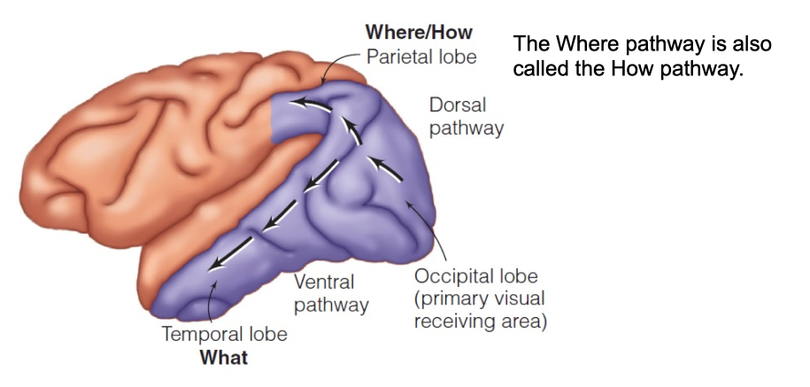
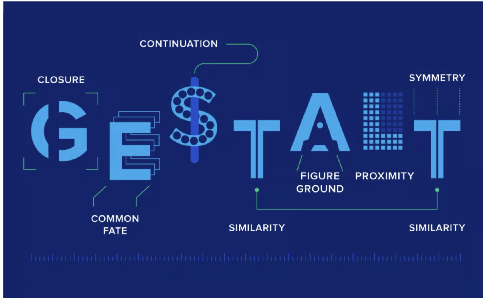

感知与认知：期末复习
Last updated on June 17, 2026 am
本文为 SJTU-ICE3611 感知与认知课程的期末复习。
Chapter 1: Introduction to Perception
- 感知认知的过程：从外部世界到内部刺激，再到 Perception、Recognition 和 Action，接着 Action 可以改变环境输入，形成闭环

-
知识(Knowledge)：对信息处理有影响
- 自下而上(bottom-up)的处理：数据驱动
- 自上而下(top-down)的处理：知识驱动，如识别成人脸
-
研究模式：外部刺激、生理表现、行为
- A：不测量生理信号，如主观打分
- B 和 C：需要测量生理信号，如使用磁共振或探针

-
测量方法：
- Method of limits**
- Method of adjustment：最快(efficient)
- Method of constant stimuli：最准(accurate)
-
Weber’s Law：最小辨别量(Difference Threshold)与刺激本身成正比
-
强度估计：人的主观感受和物理量之间是非线性关系，Steven’s Power Law
- Response compression：压缩，一般是正面感觉，如光线、声音
- Response expansion：放大，一般是负面感觉，如痛觉
Chapter 2: The Beginning of the Perceptual Process
-
锥状细胞(cones)与杆状细胞(rods)：
- 看起来长反了（视神经在细胞前面），但具有进化意义
- 后方的色素上皮对其有辅助作用
- Muller 细胞可以导光，使得能充分吸收光线
- 人眼具有盲点(blind spot)
- 锥状细胞主要分布在中心黄斑处，中心没有杆状细胞
- 周边的杆状细胞多于锥状细胞
- 看起来长反了（视神经在细胞前面），但具有进化意义
-
两种视网膜疾病：
- MD(Macular Degeneration)：中心黄斑变性，损害中心视觉
- RP(Retinitis Pigmentosa)：视网膜色素变性，损害周边视觉
-
光电转换：由视蛋白(opsin)和视黄醛(retinal)完成，放电的过程是一个催化的过程，放电后需要恢复
-
暗适应：分两段，第一段锥状细胞适应，第二段杆状细胞适应（能看清的东西更多）
-
视觉细胞敏感度：可以看出白天和夜晚的敏感范围
- R 是杆状细胞，在 M 和 S 之间
- M 和 L 离得很近


-
视神经的结构：有树突和轴突，轴突负责神经元之间的连接
-
视觉信号的传导：从人眼到纹状皮层(V1)
- 放电靠钠离子(进)和钾离子(出)的流动，并配有离子泵
- 放电可以被探针记录，频率起到指示作用，幅度不变
- 刺激越大，放电频率越高
- 在细胞之间靠神经递质(Neurotransmitters)，破膜传递信息
-
视网膜后的神经连接：
- bipolar cells(B)、ganglion cells(G)、horizontal cells(H)、amacrine cells(A)
- 光线从下向上
- 杆状细胞敏感度高但分辨率低，因为有多合一连接
- 锥状细胞敏感度低但分辨率高，因为一对一连接

Chapter 3: Neural Processing
-
侧抑制(Lateral Inhibition)：一个神经元的兴奋会使得周围细胞兴奋被抑制
- 实验：照 A 点时有神经响应，同时照周围 B 点，响应降低
- 可以解释 Simultaneous Contrast、Chevreul Illusion/Mach Band(边缘反冲现象)、Herman Grid
-
感受野(receptive fields)：一根神经对应的一片连续的区域
- 可以分类，有中心活跃周边抑制、中心抑制周边活跃等
- 对于中心活跃周边抑制，只照中心时响应最大，扩大后响应降低
-
LGN(Lateral geniculate nucleus)：一种神经节细胞
- 承担了一部分视觉处理的作用
- 视网膜上来的信息少于视觉皮层(cortex)反馈的信息
-
视觉皮层中的细胞：
- 分为简单细胞和复杂细胞，简单细胞跟方向有关，复杂细胞跟移动边缘有关
- 物体方向与检测方向平行时，响应最大；转动一定角度，响应降低
- 给猫看不同的视觉刺激，发现了这一现象
- Optic nerve fiber、LGN、Simple/Complex cortical、End-stopped cortical，起到了从简单到复杂的特征检测的作用
-
Selective Rearing：猫放在固定环境中培养，发现神经元检测特定方向能力降低
- Selective Adaptation：短时间内降低该能力
-
FFA(fusiform face area)：高层脑区，与人脸检测相关（脸盲症）
- 还有一些区域和人手有关
-
Sensory coding：
- Specificity coding：有一个神经元单独对一个人的身份响应，需要太多神经元
- Population coding：一些神经元的组合对一个人的身份响应
- Sparse coding：只有少数神经元对一个人的身份响应
Chapter 4: Cortical Organization
-
视交叉：左脑处理右侧信号，右脑处理左侧信号
-
视网膜脑图：视野中内容与皮层上响应的对应关系
- 视中心区域被放大，周边被压缩，不是等比例
- 可以通过 PET 或 MRI 看响应
-
脑皮层中神经元的组织：
- 按照 (location)column 组织，同一 column 对应的空间位置基本一致
- 一个 location column 中有多个 orientation columns，处理这一位置的不同方向
- 看树，不同位置的同一方向的 subcolumns 起作用
-
Dorsal(背流) 与 Ventral(腹流) Pathway：
- Dorsal：Where/How，与“在哪里/怎么用”有关
- Ventral：What，与“是什么”有关

-
人脑功能区：人脑的功能是分区域的
- FFA 与人脸有关
- PPA 与位置有关
- EBA 与身体结构有关
- A(Amygdala, 杏仁核) 与情感有关
-
行为来源于连接：果蝇脑结构+简单神经元，发现产生自主行为，表明智能来源于网络结构
-
Mind-body problem：人的思想看似不可研究，但可以归结为钠钾离子流动来解释，有不同观点
-
人脑的可塑性：记住自然界中不存在的事物的名字
-
Ponzo Effect：来源于对世界的大小的假设
Chapter 5: Perceiving Objects and Scenes
-
单目难以识别世界，因为世界有景深，需要两只眼睛
- 先验知识可以帮助我们识别物体
-
Gestalt 原则：了解对应的例子
- Productive thinking/Reproductive thinking 与 System1/System2 类似
- Apparent movement 证明信号本身的物理属性和人感知到的不同
- Continuation、Pragnanz(as simple as possible)…
- Similarity/Proximity/Common fate/Common region/Uniform connectedness：相似/临近/朝一个方向运动/在一个区域中/连在一起的会归到一起

-
前景与背景：
- Rubin’s vase 区分人和杯子哪个是前景哪个是背景
- 区分的结果与物体的横竖有关
- 凸的东西、有意义的东西一般被认为是前景
-
场景：包括背景、物体、物体的交互
- A scene is acted within
- An object is acted upon
-
先验知识：根据贝叶斯公式，先验决定了我们看到的东西
- Light from above：鞋印的凹凸，盘子的正反
- blob 的内容：受到整体内容的影响
-
Mind Reading：
- 用 fMRI 测量脑区活动，反推人眼看到的内容
- 但 Attention 机制使得信息传导速度受限，因此通过光纤瞬间学会东西是不现实的
Chapter 6: Visual Attention
-
Attention：人不能同时处理很多的东西，attention 是一个信息选择的过程
- 外显注意：眼睛移动过去；内隐注意：眼睛没有移过去
- 也出现在听觉中，如集中注意力到一只耳朵
- 目的是过滤无用内容，实现信息的缩减（可达到 10^10）
-
Feature Integration Theory：如何通过计算模拟 Attention 过程
- 先获得特征，再组合特征
- 实验中，人短时间内获得特征，但时间够长才会完成特征绑定
- 单一特征的 visual search 容易实现，多个特征比较困难，且难度与图的大小正相关
- Eye scanning：人眼视线的移动，可以通过 scan path 反推视觉任务
-
Attention 和脑区之间的关系可以通过实验验证
- Attention 会使得人类注意不到画面中的某些内容
-
ASD、ADHD 等疾病会使得注意力产生异常
Chapter 7: Taking Action
-
Ecological Approach to Perception：强调智能体和环境之间的相互作用
- 通过光流判断自己移动的速度和方向（运动产生光流，光流引导运动）
- 视觉能对运动产生帮助或影响，如后空翻睁眼、墙动导致人倒
-
Affordance(可用性)：物体可以用来做什么
- 看到可用东西时，EEG 在特定时间有响应
-
寻路(Wayfinding)：如何到达目的地
- 视觉信息辅助+人脑空间更新(spatial updating)
- 人脑内部有地图来导航，通过地标帮助规划路线
- 实验证明，这个现象是存在的
-
Dorsal 对于运动和互动起到的作用更多
- 视觉对运动起到调整作用，如拍番茄酱的瞬间会握紧
- 脑区中不同区域负责不同的运动
- 动作和意图有关，与环境有相互作用
- action depends on perception -> perception depends on action
- action 和 perception 之间靠 prediction 实现
-
Visuomotor grip cells：对视觉和运动都有响应
-
Mirror neurons：
- 看到别人做动作和自己做动作都会激活
- 与听觉可以结合，即对声音也有响应
Chapter 8: Perceiving Motion
-
运动能看到物体的不同视角，还能传递感情
-
三种运动：real、illusory、induced
- 看到 real 和 apparent 的脑区激活差不多
-
Reichardt detectors：可以检测朝一个方向的运动
-
伴随放电理论(Corollary discharge theory)：重点
- MS：使眼睛运动的信号
- CDS：MS 的副本
- IDS：看到的运动信号
- CDS 和 IDS 比较，如果相等，表明使眼动导致的画面运动；否则是物体运动
- 该理论对听觉也有作用
- 睁眼的时候戳眼球会觉得世界在动，因为没有 CDS

- MT 脑区能对看到的同步运动产生响应
- 如果脑区受到伤害，会对运动的判断失效
- 只看一个小区域，无法判断运动的方向，因此运动是更大脑区判断的
- MT、V1、MST、STS 都和运动有关
- 静止的图片也能产生运动的感觉
- 新生的孩子和小鸡都会对 biological motion 吸引，因此可以作为自闭症等脑部发育异常的筛选手段
Chapter 9: Perceiving Color
-
颜色帮助我们快速找到食物，还能表达情绪
- 物体会使得光反射或透射，不同的物体有不同光谱
-
加色系与减色系：光/颜料
-
三基色原理：三种颜色可以混合出人类能看到的所有颜色
- 同色异谱：其他波长的混合也能产生对应的颜色
- 不同颜色是 LMS 三种锥状细胞不同的响应组合产生的
- 人类无法通过直观感受分辨颜色的光谱
- 三基色是视网膜上响应(receptor 层面)，四基色是更高脑区的响应(opponent 层面)
- 黄色：L + M 信号组合
-
色盲：三种，分别对应 L、M、S 异常
-
颜色的神经机制：
- 不存在负责颜色感知的单一脑区
- opponent 神经元可以分为 center-surround、double center-surround 等
- double center-surround：比如对中波长负响应，对长波长正响应
- Color constancy：人类能在不同光照情况下判断颜色，即使光谱差别很大
- Light constancy：亮度相对值可以判断很准，但不是绝对值；靠模糊的边缘来判断影子
-
不同生物之间看到的颜色差别很大
Chapter 10: Perceiving Depth and Size
-
判断远近大小的途径：Oculomotor、Monocular、Binocular 三种 cues，要能举例子
- Oculomotor cues：眼球可以转动，看远处时视线平行，看近处时往内侧转
- Monocular cues：单目，遮挡、相对高度、大小、纹理密度、视差等
- Binocular cues：双目视差（越小越远）
- horopter(视野单向区)：在该圆上没有视差
-
随机点可以造出立体图
-
一些神经元与视差的多少有关
-
实验：cues 来判断物体的远近
-
Size consistency：S_p = K(R * D_p)，认为的距离正比于看到的大小乘以认为的距离
- 凸的角看起来近，凹的角看起来远
- 靠近地平线的东西认为比较远，所以看起来大（太阳落山、月亮较低）
-
猫和兔子的视野不同：猫的视野更窄，中心重叠大；兔的视野更宽，中心重叠小，所以判断远近能力更弱
- 蝙蝠能靠回声来定位
-
发育过程中对远近的判断也是一个过程
Chapter 11: Hearing
-
人能听到的波长范围很窄
-
声音可以定义为物理量，也可以定义为感知量
- 声音靠空气的压缩和疏化来传播，是一种纵波
- 传播速度与物体的密度、材料有关，固体中传播快，在空气中慢
-
声音强度定义：dB = 20 * log_10(p/p_0)
- 其中 p_0 是最小能听到的基准声压
- 因此，0 dB 是能听到的最小声压
- 100+ dB 对人耳有害
-
不同的声音可以通过傅立叶变换分解出不同频率
- 不同的频率组合让我们产生了丰富的听觉
- Missing fundamental：即使不存在频率的最大公约数，也会听到对应频率
-
声音主观响度(loudness)、可听的区域
-
音高（频率）、音色（与启奏和衰减有关）
-
周期性（音乐）、非周期性（非周期性）
-
耳朵的结构：
- 鼓膜后面有三块骨头，起到放大作用
- 后面是圆窗、椭圆窗
- 耳蜗中有前庭阶和鼓阶，横断面中是科蒂氏器，里面有听神经细胞
- 听神经细胞振动产生摩擦，进而放电（只有一个方向动会放电）
- 耳蜗和频率之间的对应关系：越往输入端(Base)，频率越高，所以年纪大的听力损失从高频开始
- 有些神经纤维只对特定频率区域又响应
-
音乐中最高音是短笛（4500 Hz）
-
听神经的频率成分，从前到后有频率差别
Chapter 12: Hearing in the Environment
-
上下：Elevation；左右：Azimuth
-
双耳判断声音方向和远近：
- interaual level difference(ILD)：声音的强度差
- interaual time difference(ITD)：声音的时间差
- cone of confusion：两者都相等
-
耳廓(pinna)结构的进化能让我们分清不同朝向的声音
- 因为不同朝向、不同频率的损耗不一致
- 同时证明人有适应性
- 鸟类对 ITD 更敏感
- 听觉也存在 what/where 的 pathway
-
室内有很多声音是反射听到的
- 两个声源先后发生，如果时间差较大，可以听到两个声音
- 但如果时间差小，只能听到一个声音（较早的）
- 音乐厅考虑的设计因素：混响时间、intimacy time、bass ratio、spaciousness factor
-
听觉 中的 gestalt 效应：会举例子
- simultaneous grouping、sequential grouping
- 离得比较近的声音可能混到一起
-
腹语效应：视觉压制听觉，口型和声音对上
-
Two-Flash Illusion：听觉压制视觉，闪一次但听到两次，以为看到两次
-
视觉和听觉在更高层脑区有互动
- 有的神经元同时对视觉和听觉有响应，且与空间位置对应
- 读故事和听故事的响应类似
Chapter 13: Perceiving Music
-
音乐没有统一的定义
- 基本的特征有：pitch、melody、temporal structure、timbre、harmony 等
-
音乐有很强的进化意义，在语言产生之前，可以情感表达和协作有帮助
- 很多音乐元素跨文化
- 音乐爱好对人脑发育有利
- 音乐与情绪有关，能唤起回忆，基本能激活所有脑区
- 基底核对节拍有响应
-
Mind over Meter(节拍)
- 语言的发音使得我们对音乐的理解也不同
- 节拍会让我们产生运动
-
调性(tonality)：人有预知能力，能补上和谐的东西
- 人不喜欢不和谐的东西，会有脑区响应
-
音乐与情感有关，两者的关系有不同观点（理解/体会）
- 在更高层脑区，对多巴胺分泌等有关
- 音乐与语言有相似性，也有区别
- 有些人失语无法欣赏音乐，也有人认为音乐和语言的感觉是分开的
Chapter 14: Perceiving Speech
-
发音靠舌头、声带的综合作用
- 元音：声带振动；辅音：嘴型变化
- 用共振峰、声谱图描述
-
发音的基本单位是音素(phoneme)
- 不同语言的因素差别很大，如英文和中文
-
coarticulation：后面音的发音会影响前面音的发音
-
控制信号是发音的不变量
- 找脑区的研究，发音和听音可能是分离或整体的网络
-
视觉影响听觉的感知
- 看人脸或嘴唇变化，也会影响音频理解
-
能理解缺损的句子，因为有先验知识
-
有意义的东西更容易听出来，而听不懂的语言很难分词
-
学语言其实学的是转移概率
-
有两种失语症，都没法表达语言，但有不同
-
也有 what/where pathway
-
实验：脑皮层和听到音素的关系
Chapter 15: The Cutaneous Senses
-
皮肤能感知到压力、疼痛、温度、振动、自身状态
-
皮肤分为上皮和真皮，有四种感受器（了解作用）
- 上皮有：默克尔感受器、迈斯纳小体
- 真皮有：鲁菲尼圆柱体、帕西尼氏小体
-
触觉皮层和身体有对应关系
- 有两条神经通路，一条快一条慢
- 人脸、人手比较敏感，背部、手肘不敏感
- 一个区域负责感受，一个区域负责控制
-
盲文：触觉能力强
-
触觉分辨率：方向、最小间隔
-
判断物体表面的材质
- spatial cues：不动
- temporal cues：移动，感到振动
-
感受野：手指上小，分辨率高；胳膊上大，分辨率低
-
haptic exploration：通过触觉反馈感知物体，可以判断形状、大小
- active touch：主体是自我感受
- passive touch：主体是物体本身
- touch 有情感和社会属性
- social touch：无髓神经纤维起作用，有最佳速度，能降低疼痛
-
触觉也存在侧抑制
- 有的神经元只对固定方向运动有响应
- 甚至只对特定物体的抓握有响应
-
疼痛分为三种：炎症性、神经性、伤害性
- gate control model：靠机械传感器的信号使得疼痛传感器关闭
- 有 top-down 过程，安慰剂能够缓解
- 脑岛、ACC 等高层脑区与疼痛有关
- 药物和疼痛有关系，如纳洛酮让人更疼，因为内啡肽位置被占据
- 看到别人的疼痛，自己也会感觉到疼痛
- social rejection 和疼痛有类似效果
-
皮肤的感觉有可塑性
Chapter 16: The Chemical Senses
-
嗅觉和味觉是一起体现的 flavor
- gate keepers，可以分辨有害的东西
- 化学反应来感受，容易消亡，需要再生
-
taste：
- 五种基本量：酸、甜、苦、咸、鲜
- 其他化合物的味道都可以由基本量构成
- 苦的东西大多有害
-
乳突上有味蕾，味蕾上有感知细胞
- 有四条神经可以往上传
-
对味道的 coding 可以是 population，也可以是 specificity
- 转基因老鼠，敲掉基因会尝不到
-
Super taster：味蕾发达，能尝到特殊物体
-
人类嗅觉的分辨能力强
- 与记忆有很强的绑定关系
- 因人而异
- COVID-19 破坏 ACE2，使得失去嗅觉
- 嗅觉与阿尔兹海默有关系
-
嗅觉很复杂
- 对类似的化合物有不同的嗅觉
- 但不一样的东西可能气味很像
- 嗅觉小球有很多种，使得我们能闻到不同气味
- 嗅球的空间分布和味道有对应关系，但主嗅觉皮层没有空间对应关系，有可能是通过学习形成的网络
- 嗅球可以直接传递信号到杏仁核，因此嗅觉与情感记忆关系近
-
Oral capture：吃东西感觉味道是嘴里来的，实际上是嗅觉和味觉的相互作用
- 嗅觉和味觉在脑岛和杏仁核有汇聚关系，嗅球同时到脑岛和杏仁核
-
贵的东西吃起来好，是 top-down 关系